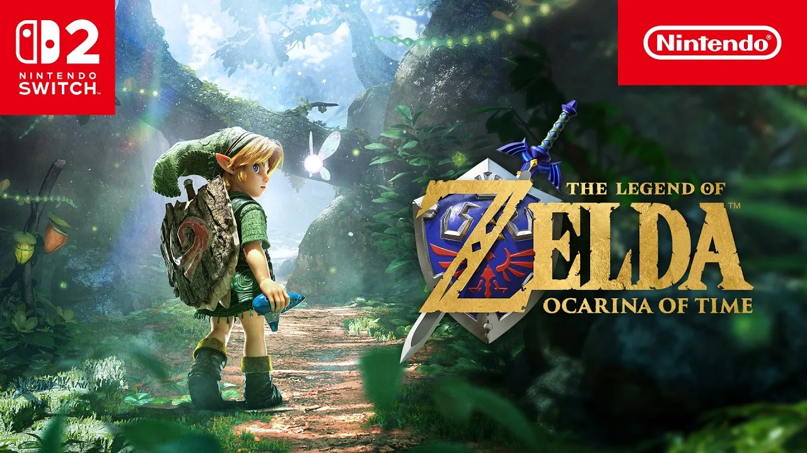

Luiso · 8 de septiembre de 2026 · 4 min de lectura
La celebración por los 40 años de The Legend of Zelda comenzó con uno de los anuncios que más expectativas había generado: Nintendo presentó nuevas imágenes de The Legend of Zelda: Ocarina of Time para Nintendo Switch 2 y confirmó finalmente su fecha de lanzamiento.
El remake llegará el 5 de noviembre de 2026, exclusivamente a Nintendo Switch 2, y estará disponible tanto en formato físico como digital. El juego recibió una importante actualización visual respecto del clásico de Nintendo 64, pero Nintendo asegura que busca mantener una interpretación fiel de la aventura original.
El nuevo tráiler permitió ver por primera vez con mayor profundidad cómo se verá Hyrule en esta reinterpretación.
Los gráficos fueron completamente renovados y ahora funcionan a 60 cuadros por segundo, con escenarios, personajes y efectos visuales reconstruidos para aprovechar el hardware de Switch 2. También se incorporaron modificaciones en los controles y nuevas posibilidades de interacción.
Uno de los cambios más llamativos es que Link ahora puede saltar manualmente, algo que no era posible en la versión original.
También habrá cámara libre, permitiendo controlar con mayor libertad la perspectiva durante la exploración y los combates. A esto se suman nuevas mecánicas relacionadas con las melodías y la navegación por el mundo.
La intención de Nintendo parece ser conservar la estructura y la identidad del clásico mientras adapta su jugabilidad a las posibilidades de una producción moderna.
El otro gran anuncio del Direct estuvo relacionado con la adaptación cinematográfica de la franquicia.
Nintendo confirmó oficialmente que la película se titulará simplemente The Legend of Zelda y llegará a los cines el 30 de abril de 2027.
La producción será una película de acción real y contará con Shigeru Miyamoto involucrado en su desarrollo. El Direct mostró además un primer adelanto extremadamente breve de la película, aunque todavía no se revelaron demasiados detalles sobre su argumento.
Nintendo explicó que la película contará una historia original basada en las ideas y elementos narrativos construidos durante los 40 años de la franquicia, con la Trifuerza teniendo un papel importante dentro de la historia.
Por ahora, Nintendo mantiene bajo reserva buena parte del proyecto, por lo que todavía habrá que esperar para conocer al elenco, los personajes y la trama completa.
La celebración también llegará al hardware.
Nintendo anunció una edición especial de Nintendo Switch 2 inspirada en The Legend of Zelda. La consola presenta motivos relacionados con la Trifuerza y detalles dorados tanto en los Joy-Con como en el dock.
Estará disponible el 29 de octubre de 2026, pocos días antes del lanzamiento de Ocarina of Time.
Sin embargo, hay un detalle importante: la consola no incluirá una copia del remake de Ocarina of Time.
Junto con la consola también llegará un nuevo mando Pro con diseño inspirado en The Legend of Zelda, además de otros accesorios relacionados con la celebración.
La celebración no se limitará a videojuegos y hardware.
Nintendo anunció nuevas figuras amiibo basadas en las versiones de Link y Zelda del remake de Ocarina of Time, además de diferentes productos relacionados con la historia de la franquicia.
También se confirmó una colaboración con LEGO: el set The Legend of Zelda: Ocarina of Time – Link & Epona tendrá 1.750 piezas y estará disponible durante la primavera de 2027.
La compañía también prepara conciertos y otras iniciativas conmemorativas, ampliando la celebración más allá de sus videojuegos.
El Zelda 40th Anniversary Direct dejó claro que Nintendo pretende convertir el aniversario en una celebración que abarque videojuegos, cine, hardware, música, merchandising y otras iniciativas.
El anuncio más importante es, sin dudas, The Legend of Zelda: Ocarina of Time. Después de meses de rumores y especulaciones, el remake ya tiene una fecha concreta: 5 de noviembre de 2026.
Y el calendario será particularmente intenso: la Nintendo Switch 2 edición especial llegará el 29 de octubre, Ocarina of Time hará lo propio el 5 de noviembre y la película de The Legend of Zelda llegará a los cines el 30 de abril de 2027.
Para Nintendo, los 40 años de The Legend of Zelda no serán solamente una mirada al pasado. La compañía está utilizando el aniversario para convertir a la franquicia en uno de los grandes pilares de su estrategia de entretenimiento para los próximos años.